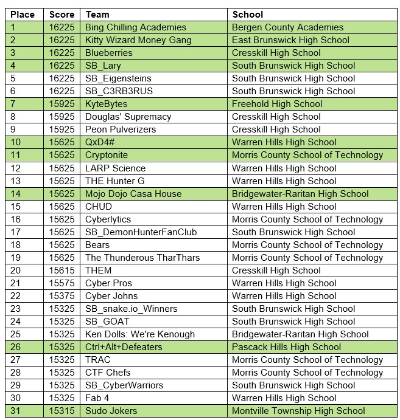
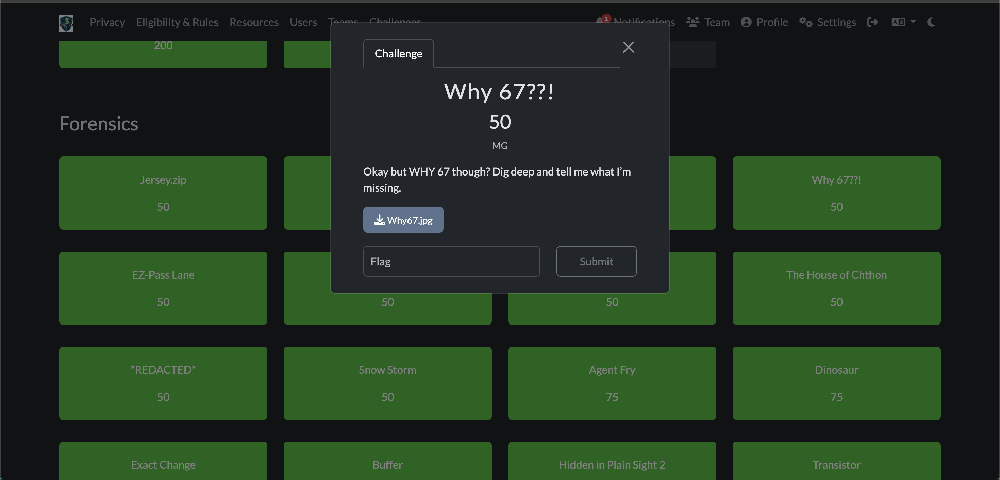

ATCS Project
Our class competed in a statewide Capture the Flag (CTF) competition, which is a cybersecurity competition where teams solve various challenges to find "flags" (secret strings) hidden in the challenges. The challenges can cover a wide range of topics, including cryptography, reverse engineering, web security, forensics, and more. Our goal was to work together as a team to solve as many challenges as possible and earn points based on the difficulty of each challenge. After a week of hardwork, and waking up early on weekends to be the first to get points, we placed high enough to advance to the New Jersey state finals(26th in all teams, 9th in all schools)! Through this experience, I learned a lot about different areas of cybersecurity and how to approach problem-solving in a competitive environment. YO GUYS THIS JUST IN WE WON THE ENTIRE THING LETS GOOOOO!

